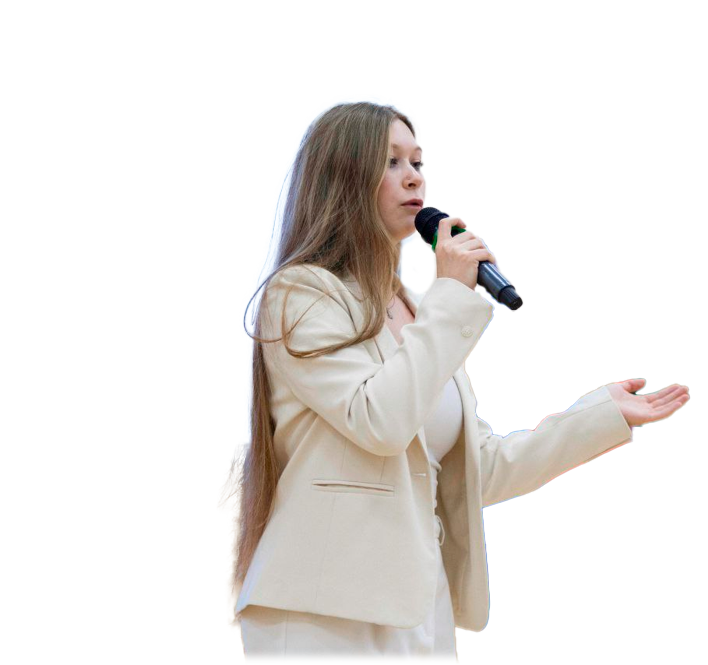

Студентка направления «Информационные системы и программирование» Лениногорского нефтяного техникума. Я выбрала IT, потому что люблю превращать сложные задачи в понятные, красивые и полезные цифровые продукты.
Мой путь начался с интереса к тому, как устроены современные сервисы изнутри: от логики баз данных до визуального оформления страниц. Поступив в Лениногорский нефтяной техникум, я освоила полный цикл разработки программного обеспечения — от проектирования функциональных моделей (IDEF0, DFD, UML) до написания серверного кода и создания современного интерфейса.
Информационная система для автоматизации работы ГАУЗ «Лениногорская ЦРБ»: управление расписанием врачей, электронные карты пациентов и история приёмов.
Программный комплекс с продуманной архитектурой базы данных, разграничением ролей пользователей и управлением заявками клиентов и тренеров.
Образовательно-игровое веб-приложение на Django, посвящённое морским традициям, флажному семафору и истории дружины «Штормовой» ВДЦ «Орлёнок».